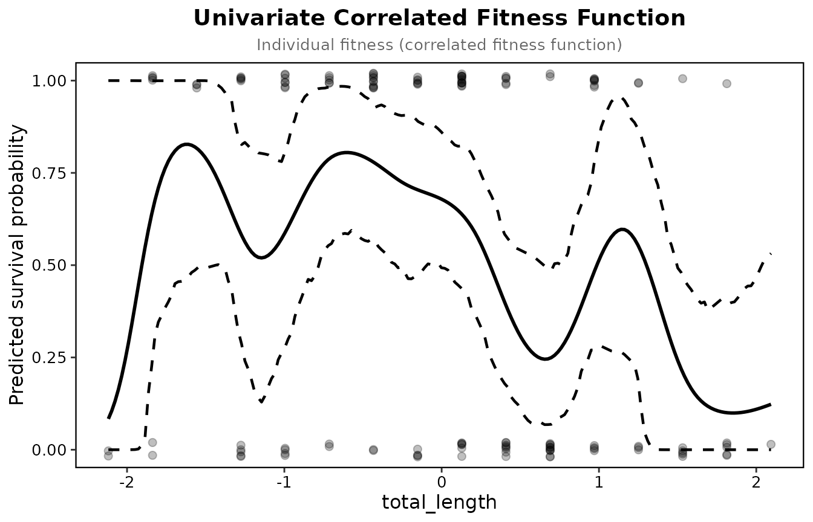

Bumpus (1899) measured 136 house sparrows brought in after a winter
storm in Providence, Rhode Island, of which 72 survived. The data ship
with the package as bumpus, with nine traits. Janzen and
Stern (1998) reanalysed them by sex with logistic regression, and their
tables are the reference the package is checked against.
Gradients on all nine traits
library(lande)
traits <- c("total_length", "wingspread", "weight", "head_length", "humerus",
"femur", "tibiotarsus", "skull_width", "sternum")
report <- selection_report(bumpus, "survival", traits, fitness_type = "binary")
report[report$Type == "Linear", ]## Selection analysis (standardised traits, relative fitness)
## Fitness type: binary
## p-values are from a logistic model on the same terms
##
## Term Type Estimate Std_Error P_Value Sig
## total_length Linear -0.4931 0.1067 0.0000 ***
## wingspread Linear 0.2478 0.1257 0.0563 .
## weight Linear -0.3842 0.0975 0.0004 ***
## head_length Linear 0.0830 0.1002 0.2484
## humerus Linear 0.2655 0.1566 0.0748 .
## femur Linear -0.0390 0.1510 0.7613
## tibiotarsus Linear 0.0048 0.1258 0.9386
## skull_width Linear 0.0683 0.0890 0.5947
## sternum Linear 0.2323 0.0924 0.0184 *
##
## Signif: *** 0.001 ** 0.01 * 0.05 . 0.1Survival selected against total length and weight and for sternum length, with the other traits held constant. The p-values come from the logistic model; the coefficients and their standard errors from least squares on relative fitness, so they are on the Lande and Arnold scale.
Within each sex
Janzen and Stern also standardised within sex and estimated each sex separately, on log-transformed traits. On logged traits the package gives their gradients to three decimals; on the raw traits used here the numbers differ a little.
by_sex <- selection_coefficients(bumpus, "survival", traits, fitness_type = "binary",
group = "sex", return_grouped = TRUE)
by_sex[by_sex$Type == "Linear" & by_sex$Term %in% c("total_length", "weight"), ]## Term Type Beta_Coefficient Standard_Error P_Value
## male.1 total_length Linear -0.5147084 0.09992533 0.0001120757
## male.3 weight Linear -0.2710191 0.09309495 0.0097296235
## female.1 total_length Linear -0.2144288 0.28448789 0.4185816892
## female.3 weight Linear -0.5367989 0.25396615 0.0341716591
## Variance Group
## male.1 0.009985072 male
## male.3 0.008666669 male
## female.1 0.080933361 female
## female.3 0.064498805 femaleMales (87 birds) carry the selection against total length; females (49) the selection against weight, with wide standard errors.
The fitness function for total length
prep <- prepare_selection_data(bumpus, "survival", "total_length")
fit <- univariate_spline(prep, "survival", "total_length", k = 6, bootstrap = TRUE, n_boot = 200)
plot_univariate_fitness(fit, "total_length")
With the default basis size, k = 10, the UBRE criterion settles on a wiggly curve (edf 8.1) for these 136 birds; k = 6, or REML with k from 4 to 10, gives a smooth one (edf 2.2 to 2.5). Survival is highest a little below average length and falls for longer birds. The band is a percentile bootstrap of the spline.
Checks
check_selection_assumptions(bumpus, "survival", c("total_length", "weight", "humerus"))## Assumption checks (binary fitness, n = 136)
##
## check statistic p
## Multivariate normality: Mardia skewness 1.05 0.006
## Multivariate normality: Mardia kurtosis 15 0.997
## Normality of total_length (Shapiro-Wilk) 0.978 0.029
## Normality of weight (Shapiro-Wilk) 0.97 0.004
## Normality of humerus (Shapiro-Wilk) 0.98 0.048
## Collinearity: largest VIF 1.75
## Rarer outcome per quadratic term 7.11
## Logistic model: separation 1.34
## Model fit: R2_Tjur (performance) 0.24
## note
## skewed
## no evidence against normality
## not normal
## not normal
## not normal
## below 5
## 64 of the rarer outcome for 9 terms; treat gamma with care
## no sign of separation
## With nine traits the quadratic model has 54 terms for 64 deaths, so only the linear gradients in the report above are worth reading.